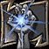

1 Incinerate · 2 Conflagrate · 3 Immolate · 4 Chaos Bolt · 5 Shadowburn · 6 Dark Soul. Or click the action bar.
| Spell | What it does | Source |
|---|---|---|
| Chaotic Energy | Passive. Replaces Life Tap. Mana regenerates 625% faster (haste speeds it up too), filler mana costs +300%, global cooldown 1.5 s → 1.0 s. | 111546 |
| Burning Embers | Up to 4 embers, 10 bits each. Fight starts with 1. | 108647, SimC |
| Incinerate | 2.0 s cast, 1645 + 1.54 × SP. +1 bit, +2 on a crit, 15% chance of +1 more. | 29722, SimC |
| Conflagrate | Instant, 2 charges, 12 s recharge, 1843 + 1.725 × SP. Same bits as Incinerate. Grants 3 Backdraft. | 17962, SimC |
| Immolate | 1.5 s cast, 502 + 0.47 × SP, then 5 ticks of the same over 15 s. +1 bit only on a crit. | 348, SimC |
| Chaos Bolt | 3.0 s cast, 1 ember. 2764 + 2.5875 × SP. Always crits (×2), then × (1 + crit chance). | 116858, SimC |
 Shadowburn | Instant, 1 ember, target under 20%. 3739 + 3.5 × SP. 15% mana back, or embers if the target dies. | 17877 |
| Backdraft | Next 3 Incinerates 30% faster (and cheaper), or one Chaos Bolt for all 3 stacks. 15 s. | 117828 |
| Havoc | 25 s cooldown: the next 3 spells, or 1 Chaos Bolt, also hit a second target. 15 s. | 80240 |
| Dark Soul: Instability | +30% crit for 20 s, 2 min cooldown, off the global cooldown. | 113858 |
| Mastery: Emberstorm | Per mastery point: ember spenders +3%, fillers +1%. | 77220 |
| Fire and Brimstone | Not simulated (AoE). Fillers cost 1 ember each and hit everything within 10 yd for 35% (+mastery). | 108683 |
| Rain of Fire | Not simulated (AoE). 25% base mana, 8 s; each hit has a 12.5% chance of +2 bits. | 104232, SimC |
| Ember Tap | Not simulated. 1 ember: heal 15% of health (+mastery). | 114635 |
Where the numbers come from. Spell numbers are the patch 5.4.8 game data as shipped in SimulationCraft release-548-8 (sc_spell_data.inc, sc_warlock.cpp), cross-checked against Wowhead’s MoP tooltips. The rotation is SimC’s Tier 16 Heroic Destruction priority list, minus trinkets, potions and pets.
What’s illustrative. The character: 20,000 spell power, 25% crit, 16 mastery points, 10% haste. Damage scales with these; the shape of the rotation doesn’t.
Simplified. No travel time, no misses, haste doesn’t shorten the 1.0 s global cooldown, and Immolate refreshes carry over up to half its duration.
Full table with links: chaotic-energy/SOURCES.md.